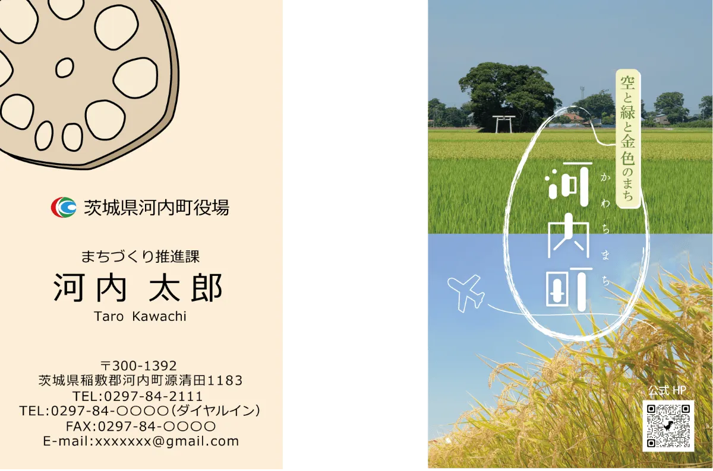

- Works -
制作実績
河内町役場 名刺
-
スクール内で実施した茨城県河内町役場の名刺デザインコンペに参加。
結果：不採用 -
現在の名刺をリニューアルしたいといった要望。河内町の良いところ・魅力が伝わるようなデザインにしてほしい。
-
シンプルでありつつもインパクトの残るデザインを制作。 表面では、可読性を重視しながらも河内町の名産物「れんこん」のイラストを起用し、話題作りのきっかけとなるように仕上げました。
裏面では、風景写真を全面的に配置し、視覚的に河内町の魅力が伝わるようなデザインにしました。また、お米のイラストをかすれたブラシで描き、フォントにもこだわることでロゴのような見た目に仕上げています。

-
illustrator、Photoshop
-
1週間